1 Anatomy of a ggplot
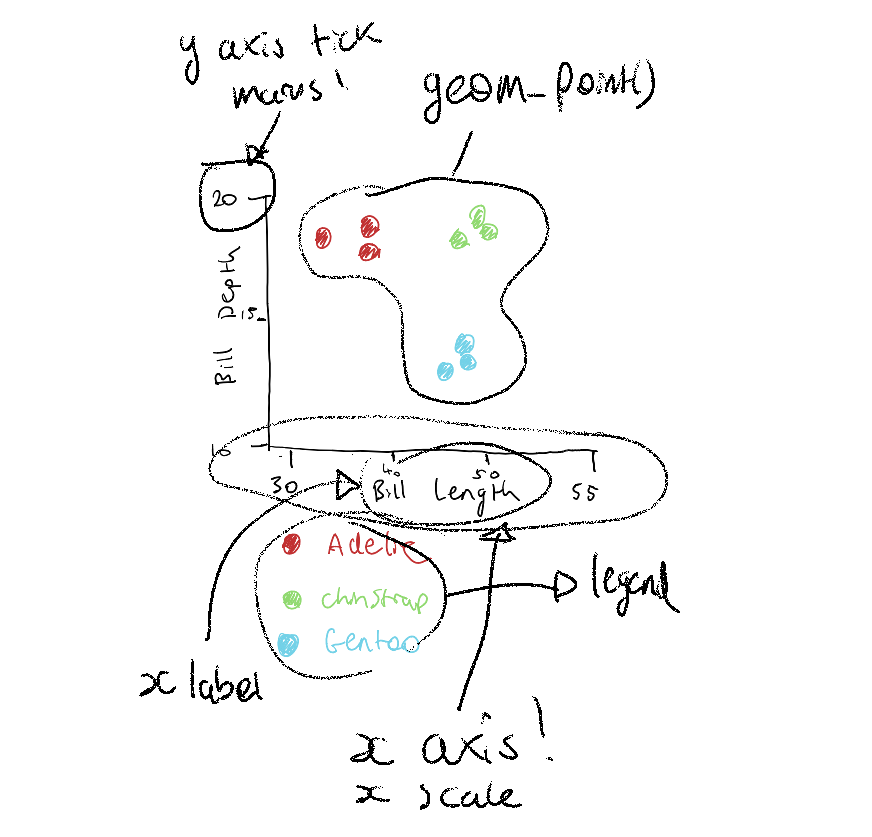
This chapter is about the underlying features of ggplot2.
You can get really far with ggplot2 by copying an example, changing the variable names, and a bit of use of an LLM.
One of the challenges with this, is that you might not have internalised the mental model of how ggplot plots are built. The interface to ggplot2 helps you think about your data, build plots quickly for exploration, but also present finely made graphics.
In this chapter we will take plots, tease them apart, and put them back together.
Overview
Duration 45 minutes
Questions
- What is this plot telling me, and what is it made of?
- What are the pieces of a ggplot?
- How do I build a plot up?
- How do I map a variable onto colour, shape, or size?
- Why does
colourinsideaes()do something different tocolouroutside it? - How do I add a second layer?
What you need this session
- A session of RStudio open
- Something to draw on, and something to draw with
- The following packages installed
Motivation
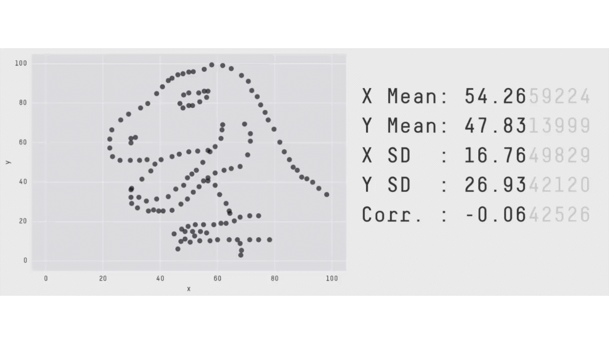
1.1 The data
We will be looking at some data from the naniar R package: oceanbuoys. The helpfile tells us:
Real-time data from moored ocean buoys for improved detection, understanding and prediction of El Ni’o and La Ni’a. The data is collected by the Tropical Atmosphere Ocean project (https://www.pmel.noaa.gov/gtmba/pmel-theme/pacific-ocean-tao).
Along with a list of the variables.
The data look like the following
| year | latitude | longitude | sea_temp_c | air_temp_c | humidity | wind_ew | wind_ns |
|---|---|---|---|---|---|---|---|
| 1997 | 0 | -110 | 27.59 | 27.15 | 79.6 | -6.4 | 5.4 |
| 1997 | 0 | -110 | 27.55 | 27.02 | 75.8 | -5.3 | 5.3 |
| 1997 | 0 | -110 | 27.57 | 27.00 | 76.5 | -5.1 | 4.5 |
| 1997 | 0 | -110 | 27.62 | 26.93 | 76.2 | -4.9 | 2.5 |
| 1997 | 0 | -110 | 27.65 | 26.84 | 76.4 | -3.5 | 4.1 |
| 1997 | 0 | -110 | 27.83 | 26.94 | 76.7 | -4.4 | 1.6 |
Each row represents recordings for a single oceanbuoy:
- The year it was taken
- Latitude and longitude
- Temperature (sea temp and air temp, celcius)
- Humidity (relative humidity)
- Wind (east-west and north-south).
1.2 Practice sketching your plots
I think sketching out your plots is a really useful first step. Especially so when you are starting out with crafting data visualisations.
Doing these kinds of sketches is something that Nicola Rennie promotes in her book, The art of data visualisation with ggplot2. It is free to read online, and is a great read, and goes into more advanced concepts than this book.
The sketches don’t have to be perfect! They can just represent your intentions for what you want to explore in the data. I find if I can draw the general shape of your plot, then it becomes easier to imagine other extensions. What is also particularly useful about this is that it doesn’t require code. So, if you don’t know how to code something up, your limitation is what you can draw.
This is the standard of sketch I am wanting you to think about doing:
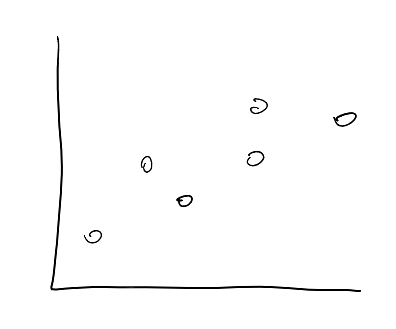
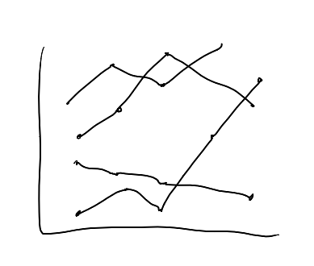
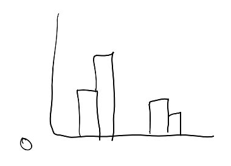
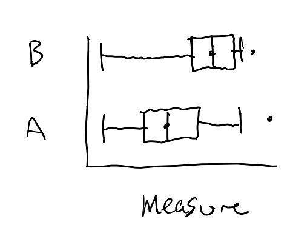
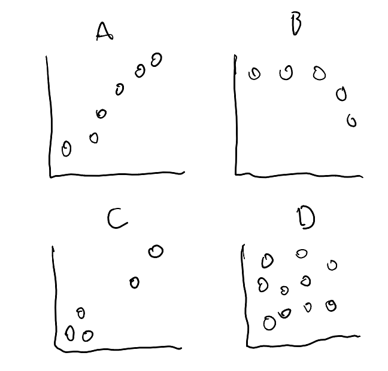
Once you are comfortable identifying the parts you need to draw, it will be easier to link these back to a plotting system like ggplot2. Which, in turn forces you to think about how your data correspond to the plot.
It also reminds me of the feeling of asking a “good question” in research: Spend time thinking about a good question, and you’ll do good work.
Have a vision of what you want to create, then you know what you want to work towards!
Let’s practice doing some sketches of data based on a few snippets of data.
I’ll show my drawings of a couple of these, and you can then practice on some other data.
Here’s what I do:
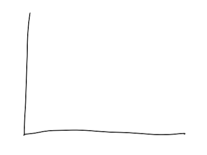
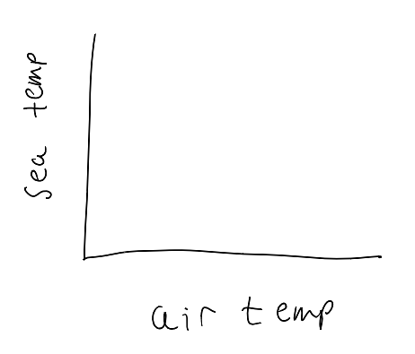
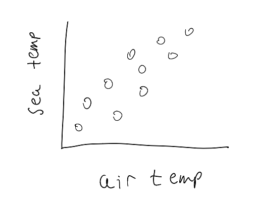
Plot the oceanbuoys data, mapping air_temp_c to the x axis and sea_temp_c to the y axis. Display using points.
Here are 6 rows of oceanbuoys, and three of its columns.
Adding missing grouping variables: `year`| year | air_temp_c | sea_temp_c |
|---|---|---|
| 1993 | 23.14 | 23.71 |
| 1993 | 23.93 | 23.84 |
| 1993 | 24.24 | 24.01 |
| 1997 | 27.68 | 28.83 |
| 1997 | 26.39 | 26.79 |
| 1997 | 27.51 | 29.10 |
I want you to practice drawing this out as a scatterplot:
- For the
oceanbuoysdata - air temp on the x axis
- sea temp on the y axis
Sketching your data isn’t the prettiest thing, but the point is that you practice visualising what is in your head, and putting it on the page.
There is something special about this. The better you are at putting these on the page, the easiest it will be to see them in your code.
1.3 Use ggplot2 to make a plot
Here’s one I prepared earlier.
I’ve created a data visualisation of this data using ggplot2:

Each point is a reading from a buoy floating in the tropical Pacific.
- The X axis (horizontal) is the air temperature
- the Y axis (vertical) is the temperature of the sea underneath it
Take a couple of minutes to assess what you see in the plot above, and answer these questions:
- How is the ggplot different to your sketch?
- What do you see in the data - what is the story?
- Is there something in here you would want to explore?
1.4 Creating plots in ggplot
OK, let’s walk through how to create the plot using ggplot2. I like to use this template:
ggplot(data = <<DATA>>,
mapping = aes(x = <<X AXIS VARIABLE>>,
y = <<Y AXIS VARIABLE>>)) +
geom_<<GEOM>>(<<OPTIONS>>)Here is the code that produced the above plot, with that template:
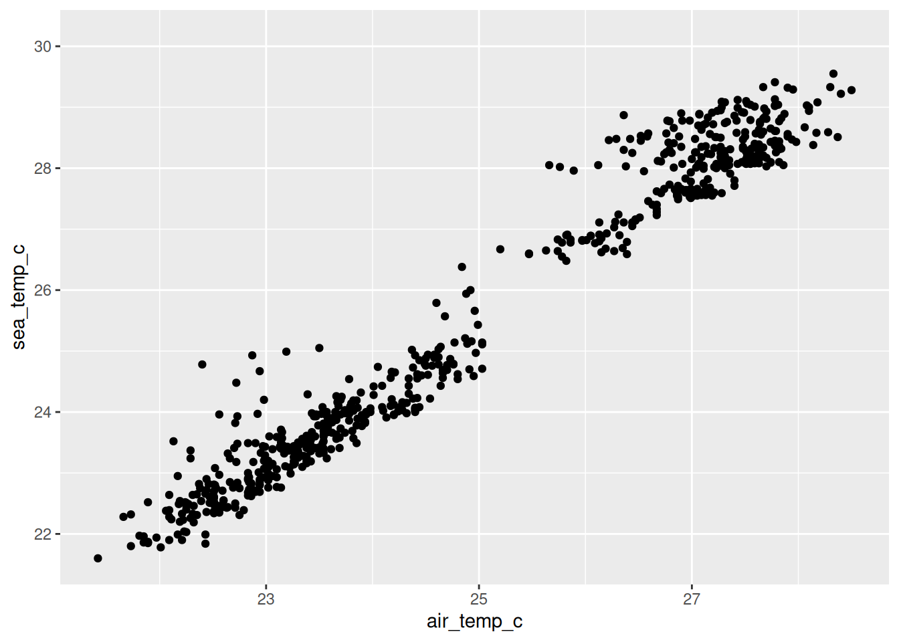
What is it made of?
Let’s take another look at the code that creates Figure 1.1:
- 1
-
We see data,
oceanbuoys, which is from the {naniar} package. - 2
-
There is a set of instructions mapping which column goes where - Those live inside
aes():air_temp_cacross the x axis,sea_temp_cup the axis - 3
-
There is a
+between them, which is how you glue the parts together. - 4
-
There is something saying draw a point for each row: is
geom_point().

1.5 Building it back up
Three lines, three pieces. Data, aesthetics, geom.
Let’s show this as a set of panel tabs, to get a bit more of a sense of the plot being built up.


Look at Figure 1.1 and answer these without running any code.
- How many rows do you think
oceanbuoyshas? Have a guess, then check withnrow(oceanbuoys). - If you mapped
humidityonto the y axis instead ofsea_temp_c, which part of the code would change? - Using ggplot, can you draw this plot, with
humidityon the y axis? See the above code for a template.
Let’s talk about adding colour - draw a scatterplot of this data:
| year | air_temp_c | sea_temp_c |
|---|---|---|
| 1993 | 22.99 | 23.29 |
| 1993 | 23.90 | 23.77 |
| 1993 | 22.35 | 22.65 |
| 1997 | 26.79 | 27.73 |
| 1997 | 26.12 | 28.05 |
| 1997 | 28.28 | 28.59 |
- Draw the axis
- air temp
- sea temp
- Colour/shade the points by year
Here it is in ggplot:
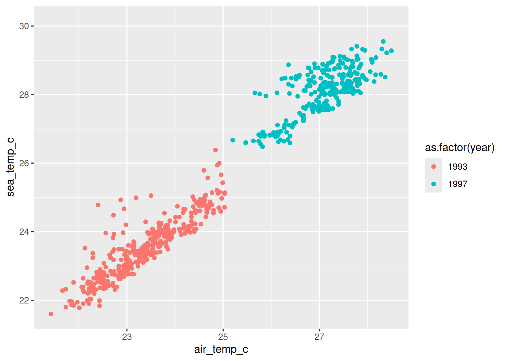
- What do you notice?
- How would you explore differences between years?
- What would you search for?
1.6 The components of the grammar of graphics
The grammar of graphics is an idea from Leland Wilkinson, and ggplot2 is Hadley Wickham’s implementation of it. It is described as a grammar, in the sense that you can combine components together to express something complex.
There is more detail to the differences between Wilkinson’s grammar of graphics, and the grammar implemented in ggplot2. If you want to learn more about the specific differences, the ggplot2 book describes these, but I also would recommend reading the chapter in Hadley Wickham’s PhD thesis, which provides other detail, too.
There are seven parts to the grammar of graphics as implemented in ggplot. I don’t know them off by heart, and I don’t expect you to. But they do provide a useful outline for the different features we will discuss in this course:
Data: Data frame you are plotting
| year | latitude | longitude | sea_temp_c | air_temp_c | humidity | wind_ew | wind_ns |
|---|---|---|---|---|---|---|---|
| 1997 | 0 | -110 | 27.59 | 27.15 | 79.6 | -6.4 | 5.4 |
| 1997 | 0 | -110 | 27.55 | 27.02 | 75.8 | -5.3 | 5.3 |
| 1997 | 0 | -110 | 27.57 | 27.00 | 76.5 | -5.1 | 4.5 |
| 1997 | 0 | -110 | 27.62 | 26.93 | 76.2 | -4.9 | 2.5 |
| 1997 | 0 | -110 | 27.65 | 26.84 | 76.4 | -3.5 | 4.1 |
| 1997 | 0 | -110 | 27.83 | 26.94 | 76.7 | -4.4 | 1.6 |
Aesthetics: How columns map onto visual features
Geoms: The mark drawn
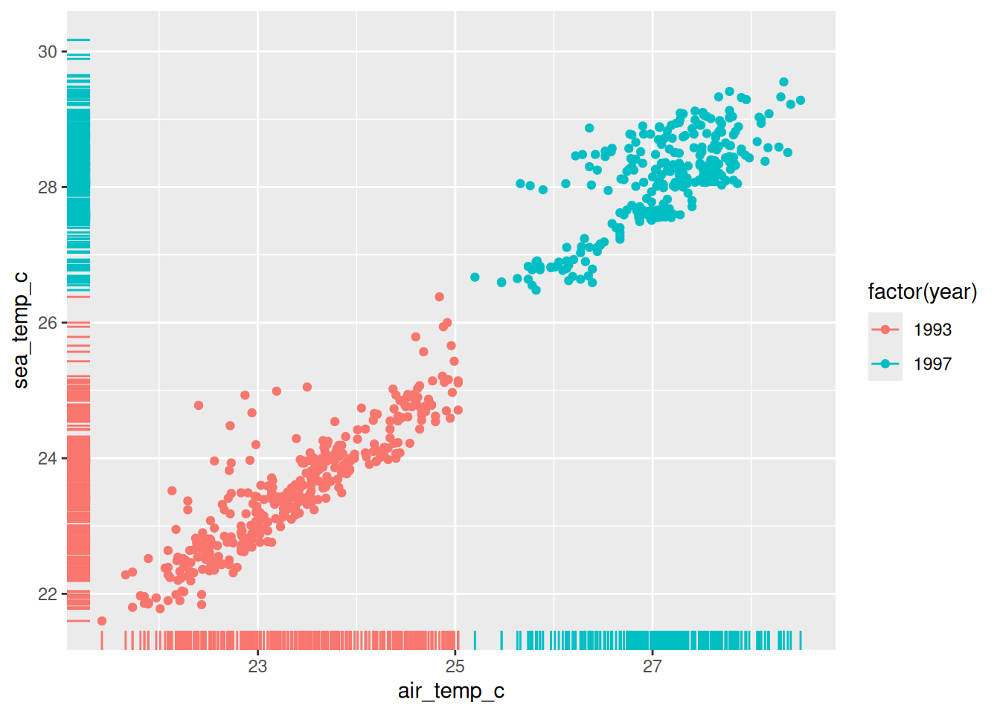
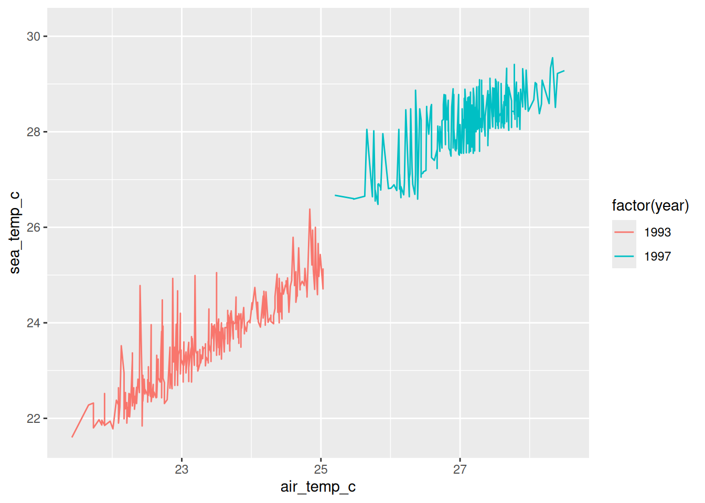
Stats: The computations that happen before drawing
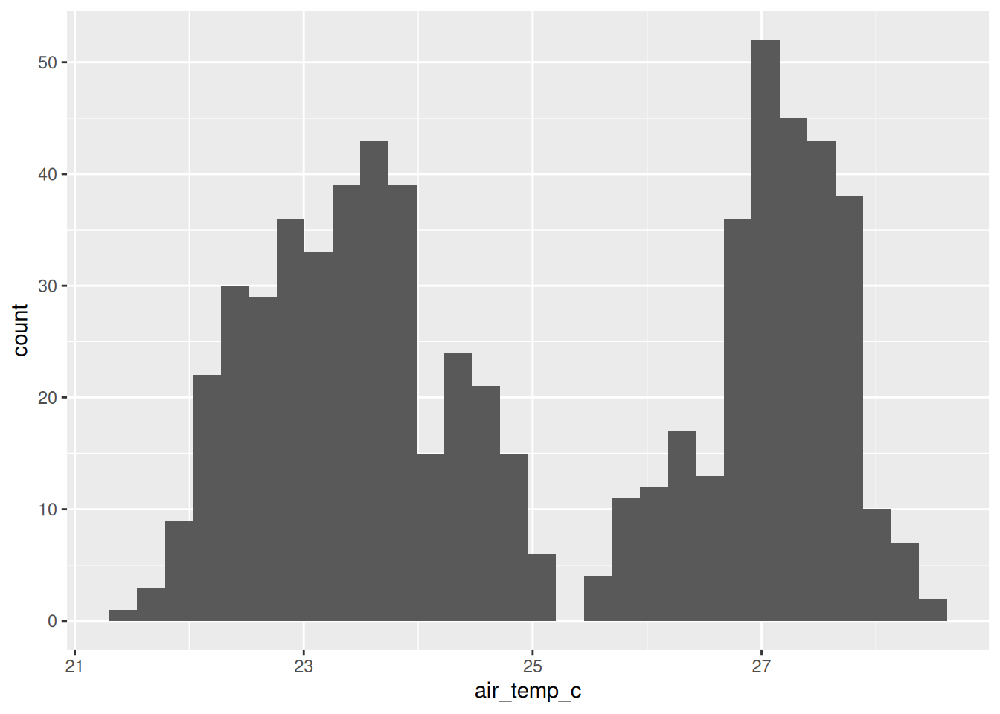
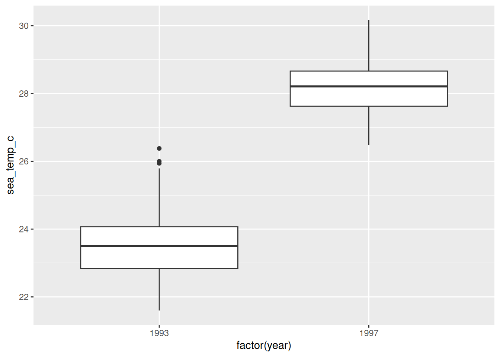
Scales: How data values change into different positions, and colours
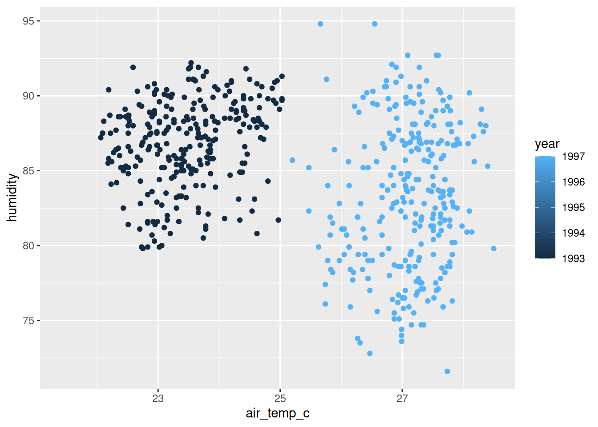
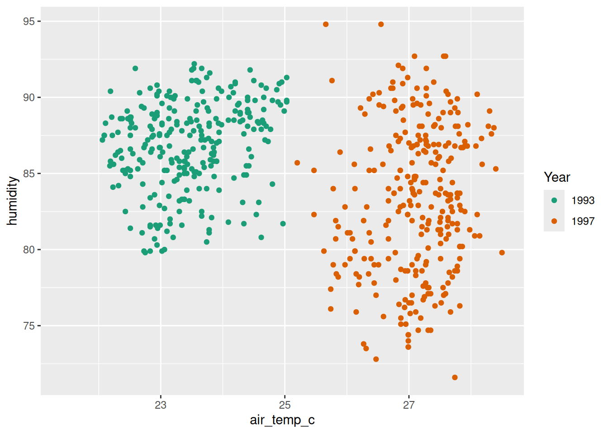
Coords: The coordinate system that the marks (geom) are placed
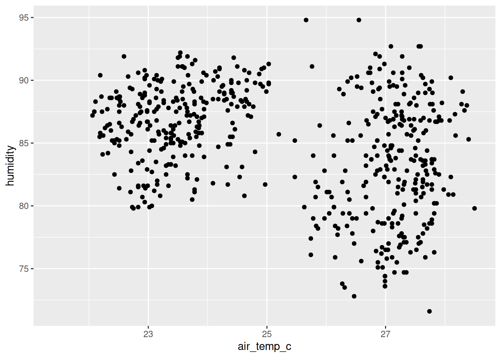
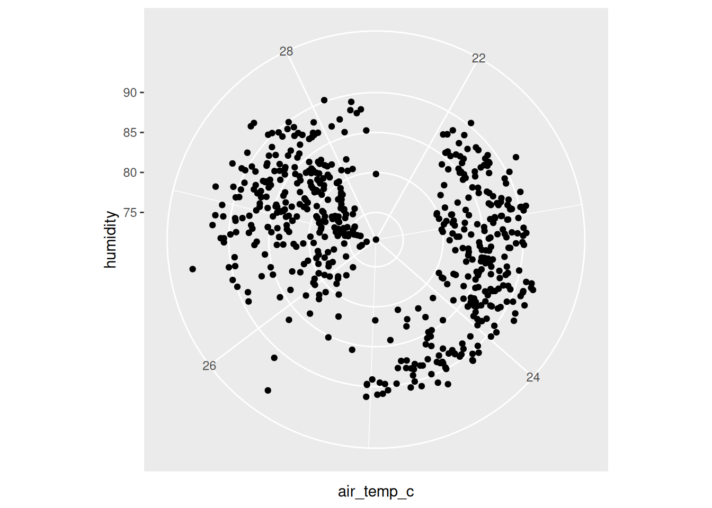
Facets: How the plot is split into smaller subplots

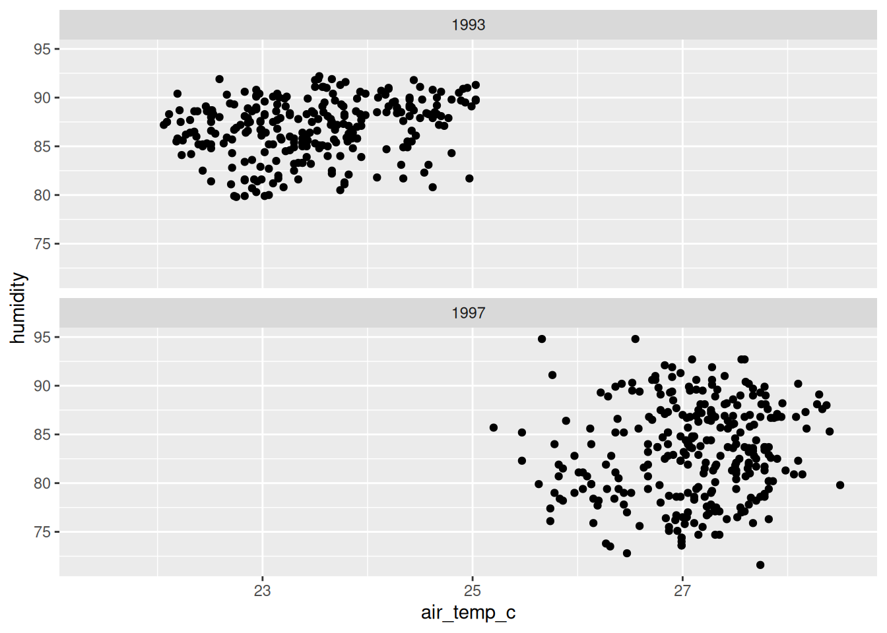
In this chapter we focus on: Data, aesthetics, and geoms.
We will come back to these components as we go in the course. But I find knowing the names of these features of the plot provide useful features of a mental model to focus on and understand.
To give you a visceral sense of some of these features, I would like you to explore plotting another dataset. There are only 9 values, so you should be able to draw these.
| species | year | bill_len | bill_dep |
|---|---|---|---|
| Adelie | 2007 | 39.1 | 18.7 |
| Adelie | 2008 | 39.6 | 17.7 |
| Adelie | 2009 | 35.0 | 17.9 |
| Chinstrap | 2007 | 46.5 | 17.9 |
| Chinstrap | 2008 | 50.5 | 18.4 |
| Chinstrap | 2009 | 50.9 | 17.9 |
| Gentoo | 2007 | 46.1 | 13.2 |
| Gentoo | 2008 | 49.1 | 14.8 |
| Gentoo | 2009 | 49.1 | 14.5 |
Sketch!
Here’s the data again:
# A tibble: 9 × 4
species year bill_len bill_dep
<fct> <int> <dbl> <dbl>
1 Adelie 2007 39.1 18.7
2 Adelie 2008 39.6 17.7
3 Adelie 2009 35 17.9
4 Chinstrap 2007 46.5 17.9
5 Chinstrap 2008 50.5 18.4
6 Chinstrap 2009 50.9 17.9
7 Gentoo 2007 46.1 13.2
8 Gentoo 2008 49.1 14.8
9 Gentoo 2009 49.1 14.5I want you to draw a rough sketch of the penguins data, as a scatterplot:
- Bill Length (bill_len) on the x axis
- Bill Depth (bill_dep) on the y axis
- Each point should be coloured
Some things to consider as you draw:
- You can use symbols for the species if you don’t have multiple colour options
- How will you know which species is which (you will need a legend!)
- What should the range of the x axis be?
- What should the range of the y axis be?
Let’s take 5 minutes to do this - I’ll draw this too.
Here’s one I prepared earlier:
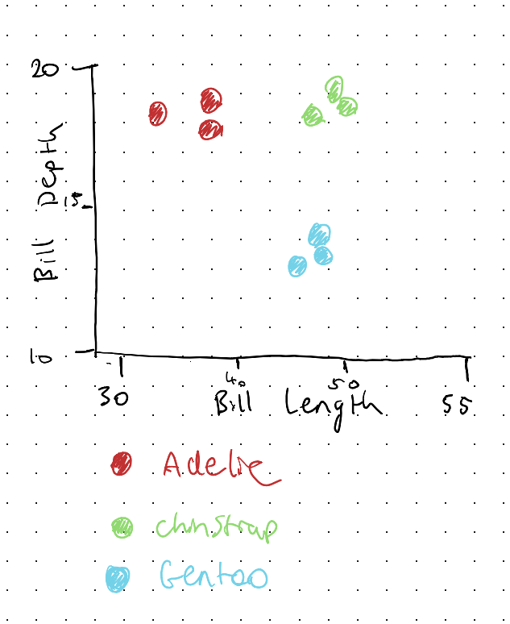
Here’s what ggplot2 does:
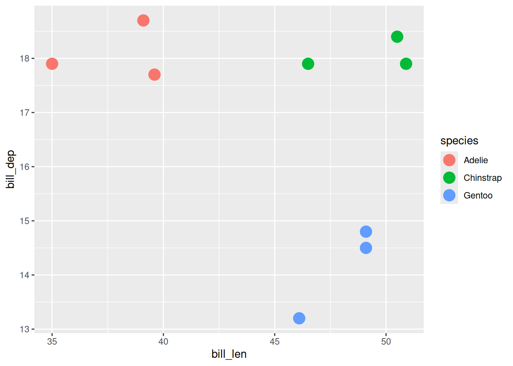
- What did you notice about drawing your plot?
- Did you notice the extra steps for drawing a legend?
- The steps for determining the x and y axis?
There are many decisions you need to make when making a plot. I think ggplot really does a great job of breaking down those components in a way that make you think about the data, at the right level of detail.
1.7 Building the plot back up
Let’s show the data and the plots alongside ach other again, so you can see the impact of colour:

You might have noticed a warning in the recent plots:
Removed 81 rows containing missing values or values outside the scale rangeThat is no mistake! There are 81 readings in this data where the air temperature was never recorded, and ggplot2 cannot draw a point when it does not know where to put it, so it drops them and tells you.
This is a good thing, I think. For two reasons:
The fact it told you at all! Missing values are often omitted. It’s nice ggplot2 is honest.
The plot you are looking at is missing 81 readings, and nothing on the plot itself shows you that. You would have to read the warning.
I’ve spent a lot of time looking at missing data, and so I wrote two R packages to help explore data, and missing data: {visdat}, and {naniar}.
A plot that I think is worthwhile showing is the vis_miss() plot from {visdat}:
This shows the overall missingness in the dataset.
We come back to missing data properly later in the course, where we draw those rows instead of throwing them away. For now, just know that they are missing.
1.8 Mapping more variables
We have mapped x and y axis to data columns, and then demonstrated how colour changes the impact of the story.
There are more variables beyond “colour”, such as “shape”, and “size”.
To use these, you map a variable onto one the same way every time, inside aes().
Let’s try shape, instead of colour:
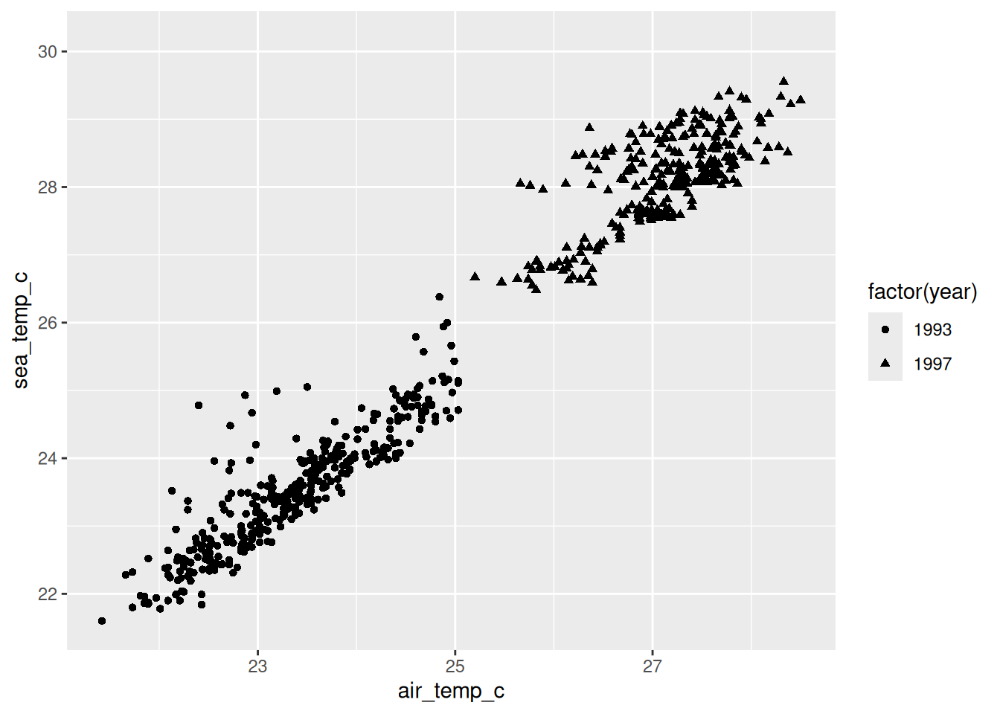
It works, and I think it is clearly worse than the colour version - see them side by side below to illustrate this:
Warning: Removed 81 rows containing missing values or values outside the scale range
(`geom_point()`).
Removed 81 rows containing missing values or values outside the scale range
(`geom_point()`).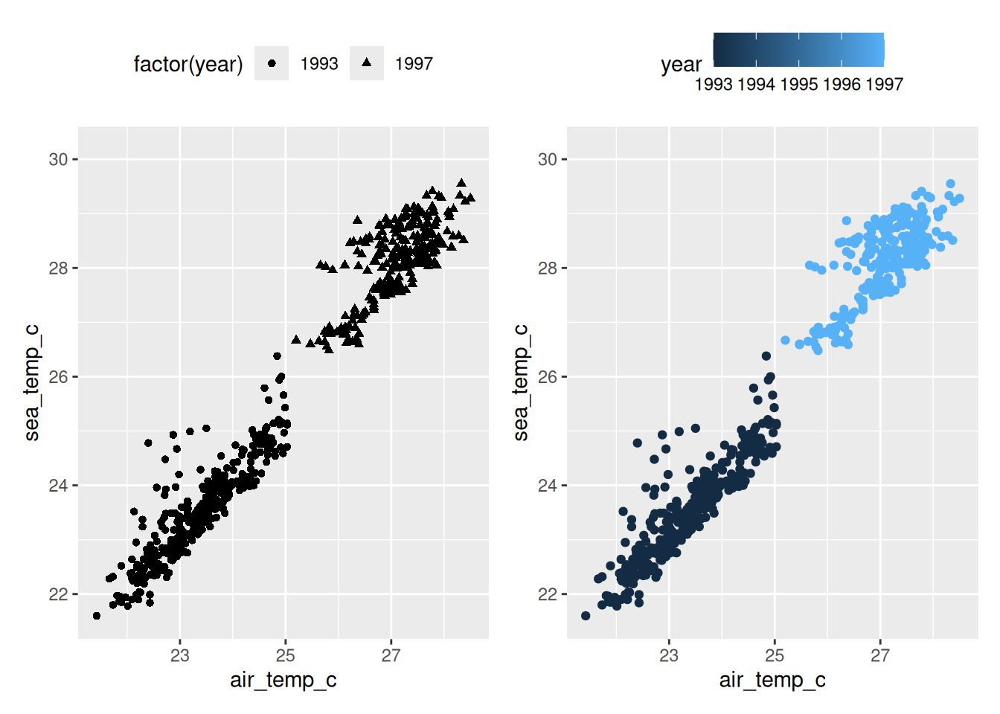
The two groups are separated well enough here that you can still see the difference in shape, but you are now doing shape recognition instead of colour recognition. Humans are naturally much faster at identifying colour.
Now let’s try size - we can map it onto the same “year” variable:
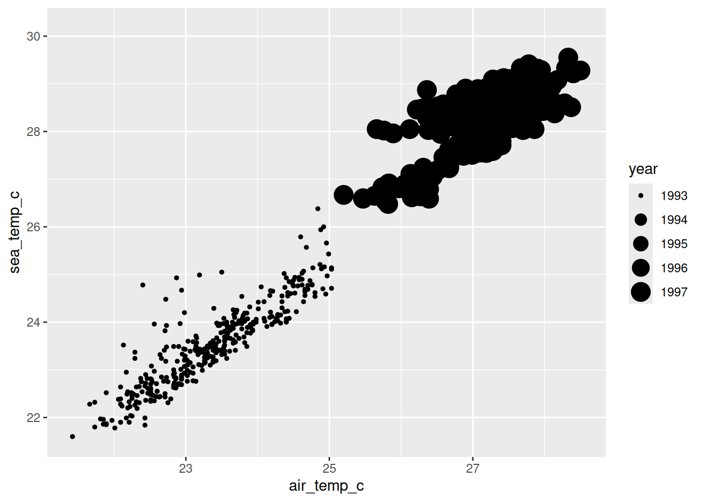
While more obvious than shape, I do not thinkg this is a great usage of size. We can try mapping size to another variable, such as “humidity”:
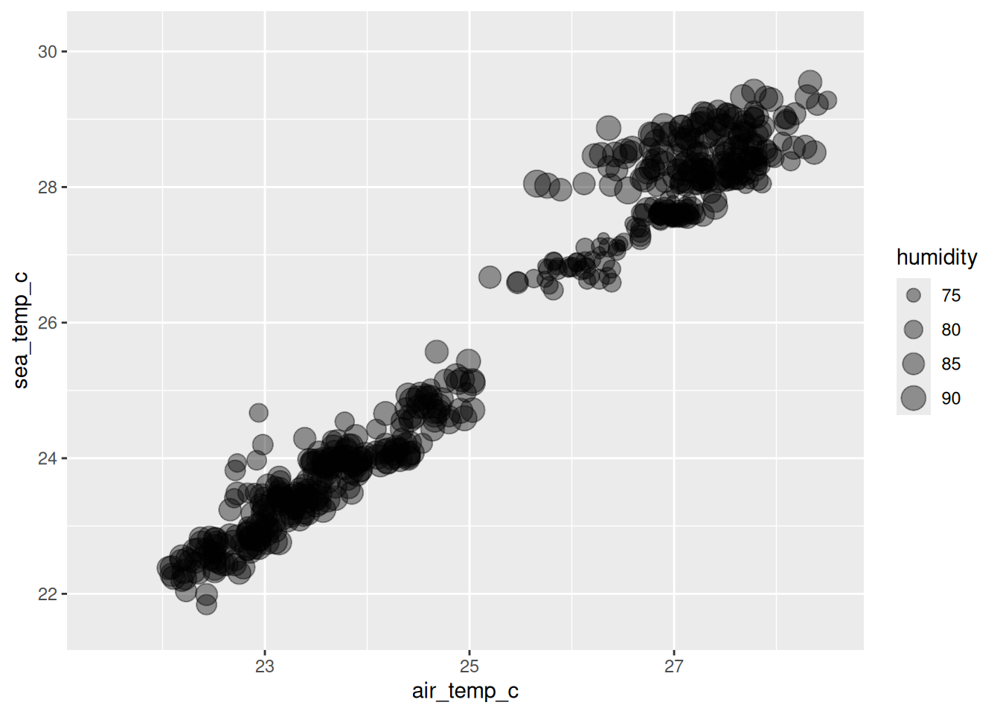
Hmm? I don’t love it. There is variation in size, but a lot of the points cover each other, and it is actually kind of hard to compare the sizes. I don’t see a clear story, beyond the fact that air temperature and sea temperature are correlated.
So, while it is possible, mapping to aesthetics like shape and size aren’t always the best choices.
We come back to this properly later in the course, where we discuss choosing between different aesthetic mappings.
- Using the
oceanbuoysdata, make a scatterplot in ggplot2 ofwind_ewagainstwind_ns, coloured by year (as a factor).
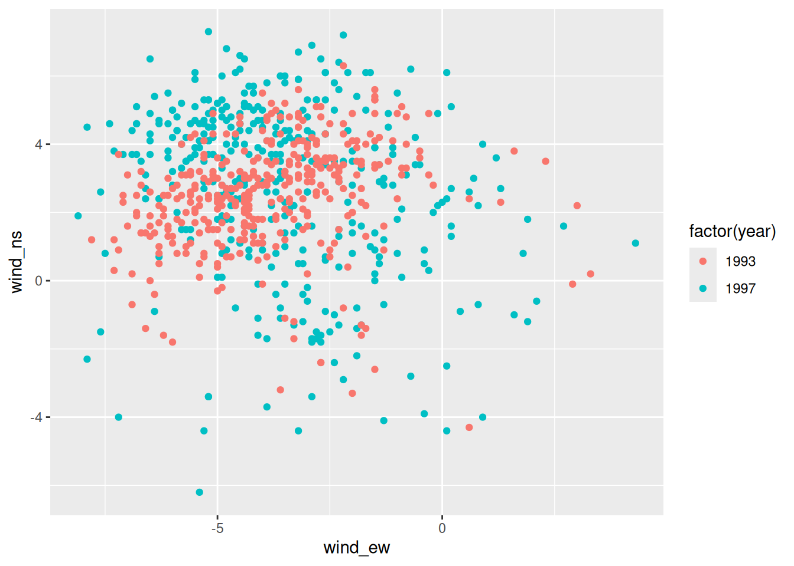
- Now map
sea_temp_conto colour instead. What is different about the legend?
- Try mapping
yearonto colour without wrapping it infactor(). What happens, and why do you think that is?
1.9 Using aes inside and outside
What to put inside and outside aes() ?
This is a common gotcha, it catches everybody, including me, sometimes.
If you want some nice “purple” points - a reasonable request - you write might write:
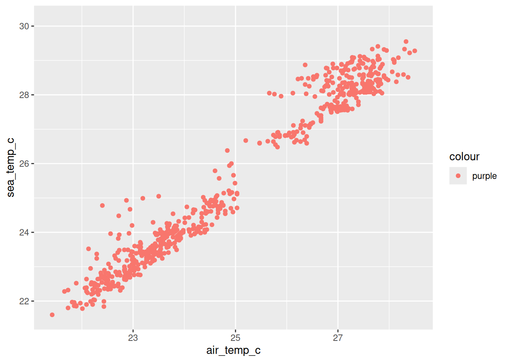
We now have a legend with an entry, “purple” - a bit strange, and unexpected?
So, what happened?
- Inside
aes()are mappings to a variable in your data. - “purple” is not a variable in the data.
- ggplot treated “purple” as a variable of a single category
The code above says:
“take this variable and use it to decide the colour”
ggplot2 did exactly that. It took the value "blue", and treated it as a variable with one single category, and gave that category the first colour from its default palette, which happens to be salmon.
If you want to set a colour rather than map one, it goes outside aes(), in the geom.
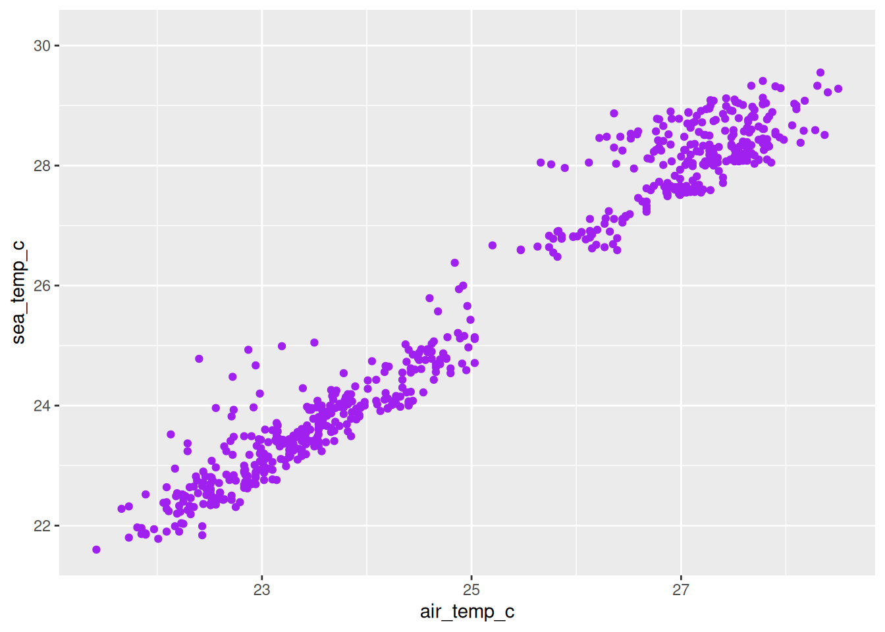
Purple points, no legend.
The rule is short, and it is worth memorising.
Inside
aes()maps a variable.Outside
aes()sets a value.
Unexpected legends and colours can be clues for this kind of error!
- Make the points in your wind plot dark green and slightly transparent.
- Now deliberately put
colour = "darkgreen"insideaes()and look at what you get. size = 3andalpha = 0.5follow exactly the same rule. Try setting each of them in both places.
1.10 Layers
The + is doing a lot! It is worth being explicit about what.
Each thing you add with + is a layer, and layers draw on top of each other in the order you write them. So let’s add a second one.
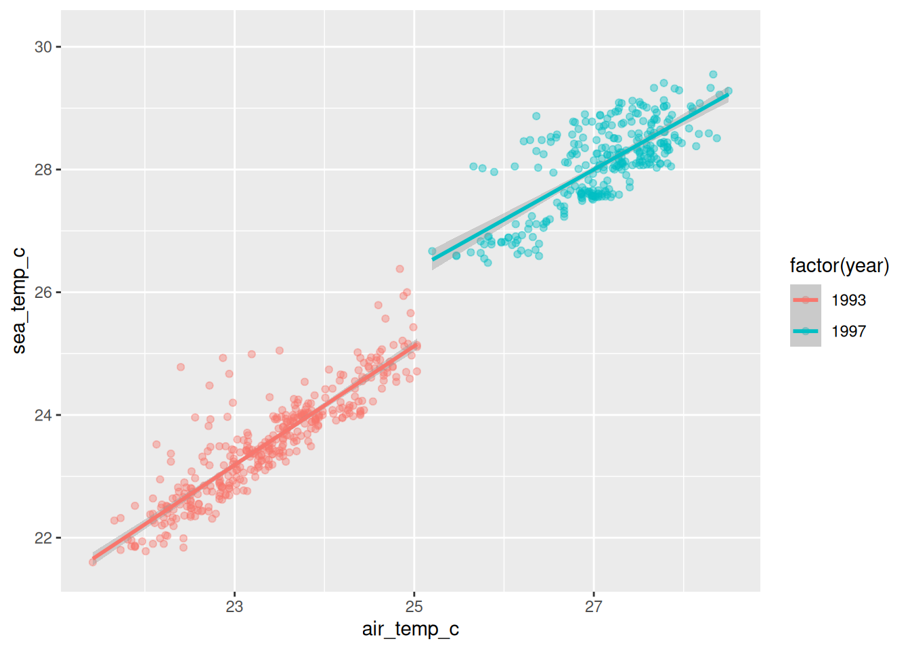
Two trend lines, one per year.
I never told geom_smooth() about the years. It inherited the whole aes() from the ggplot() call, including the colour mapping, and a colour mapping splits the data into groups. So it fitted one line per group.
That inheritance is the useful default most of the time. When you do not want it, give the layer its own aes() and it will use that one instead.
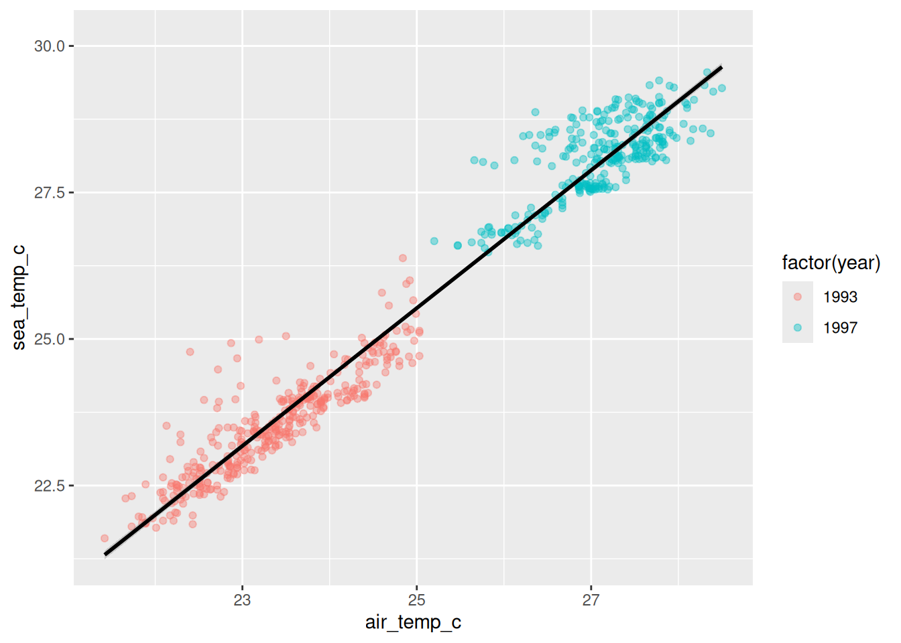
Now the colour mapping lives on the points, so the smooth doesn’t see it, and you get one line across everything.
Those two plots say quite different things, and the only difference is where the aes() sits. Worth remembering when a smooth does something you didn’t expect.
- Add
geom_smooth()to your humidity plot. - Swap the order of
geom_point()andgeom_smooth(). Can you see the difference? Look closely at where the lines and points overlap. - Try
geom_smooth(se = FALSE). What went away?
1.11 To summarise
Three things to take out of this chapter.
- A ggplot is data, aesthetics, and a geom, glued together with
+. Everything else is detail hanging off those three. - Inside
aes()maps a variable, outsideaes()sets a value. An unexpected legend means you mapped something by accident. - The channels are not equal. Position first, then colour, then shape, and size only when you have run out of better ideas.
And one habit, which is the one I actually care about.
When a plot surprises you, do not reach for a different example to copy. Ask which of the seven pieces is doing something you did not ask it to do. Nearly every ggplot2 problem I have ever had turned out to be one piece behaving exactly as documented, in a way I had not thought about.
Next up is the shape of your data, which is where most of the remaining surprises come from.